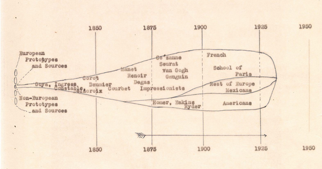

In the late 1920s, three progressive and influential patrons of the arts, Lillie
P. Bliss,
Mary Quinn Sullivan, and Abby
Aldrich Rockefeller, perceived a need to challenge the conservative policies of
traditional
museums and to establish an
institution devoted exclusively to modern art.

Citation: MoMA Through Time
Founding director Alfred H. Barr Jr. initially conceived the Museum’s
collection as “a torpedo moving through time, its
nose the ever advancing present, its tail the ever preceding past of
50 to 100 years ago.”

Citation: MoMA Through Time
The MoMA has faced frequent accusations of being exclusive, ruled by the Western
culture, predominantly white and male,
elitist, and paternalistic.

Citation: MoMA Through Time
For example: "In 1997 the Guerrilla Girls, a feminist artist collective, surveyed
MoMA’s painting and sculpture galleries, and
determined that a paltry 9 percent of the offerings were by white women; the survey
found that not a single work on view
was by a woman of color. Later on, the picture looked even worse. When art historian
Maura Reilly surveyed the permanent
galleries after a 2004 reinstallation, she found that just 4 percent of the art
displayed was by women, and even less
than that by women of color."
Citation: Art in America - In Collection Hangs, Major Museums Remix the
Classics